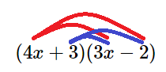
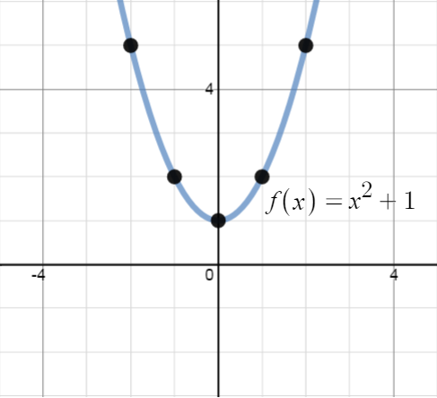
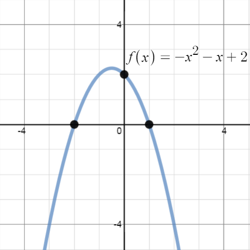
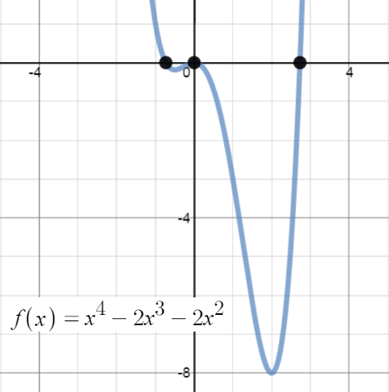
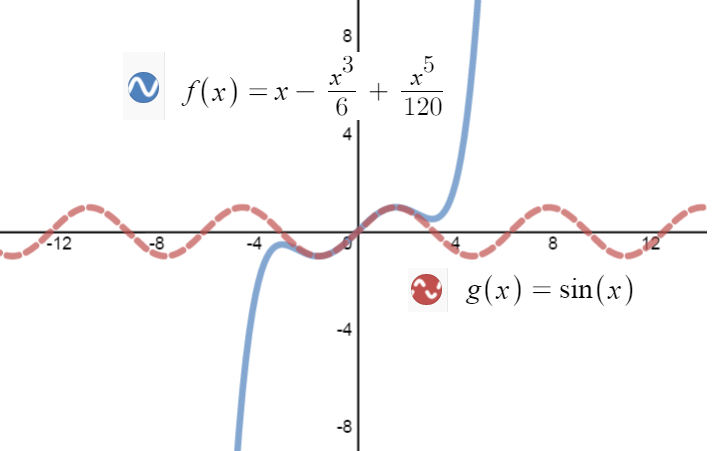

| Plotting a few more points gives the graph: |  |
Many applications in mathematics have to do with what are called polynomials. Polynomials are made up of terms. Terms are a product of numbers and/or variables. For example, $5x$, $2y^3$, $-4$ and $ab^3c$ are all terms. Each term has a coefficient, the number, and a degree, the power of the variable in the term--if there is more than one variable, then the degree is the sum of the exponents on the variables.
Example 3B-1:
Here is the breakdown of coefficients and degrees for the examples we just gave:| Term | Coefficient | Degree |
| $5x$ | $5$ | $1$ since $x = x^1$ |
| $2y^3$ | $2$ | $3$ |
| $-4$ | $-4$ | $0$ since $-4 = -4(1)$ and $1 = x^0$ |
| $ab^3c$ | $1$ (why?) | $5$ since $ab^3c = a^1b^3c^1$ nad $1+3+1=5$ |
Example 3B-2:
Here are some examples:| Polynomial | Leading term | Degree |
| $1.12x^2 + 5.4x - 1.7$ | $1.12x^2$ | $2$ |
| $21 + 3w^4-w^2$ | $3w^4$ | $4$ |
| $10+2x+4xy- 7xy^2$ | $7xy^2$ | $3$ |
| $5x+2$ | $5x$ | $1$ |
| $-4$ | $-4$ | $0$ |
If we know what the variable in a polynomial represents we can replace the variable with the number and evaluate the polynomial as shown in the following example.
Example 3B-3: Evaluate $2x^2 - 4x + 6$ when $x = -4$
| $2x^2 - 4x + 6$ | Replace variable $x$ with $-4$ |
| $2(-4)^2 - 4(-4) + 6$ | Exponents first |
| $2(16) - 4(-4) + 6$ | Multiplication (we can do all terms at once) |
| $32 + 16 + 6$ | Add |
| $54$ | Our Solution |
It is important to be careful with negative variables and exponents. Remember the exponent only affects the number it is physically attached to. This means $-3^2 = -9$ because the exponent is only attached to the $3.$ Also, $(-3)^2=9$ because the exponent is attached to the parentheses and affects everything inside. When we replace a variable with parentheses like in the previous example, the substituted value is in parentheses. So in the example, $(-4)^2 = 16$. However, consider the next example.
Example 3B-4: Evaluate $-x^2 + 2x + 6$ when $x=3$
| $-x^2 + 2x + 6$ | Replace variable $x$ with $3$ |
| $-(3)^2 + 2(3) + 6$ | Exponent only on the $3$, not negative $3$ |
| $-9 + 2(3) + 6$ | Multiply |
| $-9 + 6 + 6$ | Add |
| $3$ | Our Solution |
World View Note: Ada Lovelace in 1842 described a Difference Engine that would be used to calculate values of polynomials. Her work became the foundation for what would become the modern computer (the programming language Ada was named in her honor) more than 100 years after her death from cancer.
Generally when working with polynomials we do not know the value of the variable, so we will try to simplify instead. The simplest operation with polynomials is addition. When adding polynomials we are simply combining like terms. Consider the following example
Example 3B-5:Add the two cubic polynomials
| $(4x^3 - 2x + 8) + (3x^3 - 9x^2 - 11)$ | Combine like terms: $4x^3 + 3x^3 = 7x^3$ and $8-11=-3$ |
| $7x^3 - 9x^2 - 2x - 3$ | Our Solution |
Generally final answers for polynomials are written so the exponents on the variable count down. Example 3B-3 demonstrates this with the exponent counting down $3,$ $2,$ $1,$ $0$ (recall $x^0=1$). Note that this is not a rule for writing polynomials--just an easy way to organize the terms and to make the degree of the polynomial clear. The polynomial in Example 3B-3 could just as well be written as: $ - 3 - 2x - 9x^2 + 7x^3$ or $ - 2x + 7x^3 - 3 - 9x^2$, but then we have to "search" through the terms to determine the degree.
Subtracting polynomials is almost as fast. One extra step comes from the minus in front of the parentheses. When we have a negative in front of parentheses we distribute it through, changing the signs of everything inside. The same is done for the subtraction sign.
Example 3B-6:
| $(5x^2 - 2x + 7) - (3x^2 + 6x - 4)$ | Distribute negative through second part |
| $5x^2 - 2x + 7 - 3x^2 - 6x + 4$ | Combine like terms $5x^2 - 3x^2 =2x^2$ and $-2x - 6x = -8x$, and $7 + 4 = 11$ |
| $2x^2 - 8x + 11$ | Our Solution |
Addition and subtraction can also be combined into the same problem as shown in this final example.
Example 3B-7:
| $(2x^2 - 4x + 3) + (5x^2 - 6x + 1) - (x^2 - 9x + 8)$ | Distribute negative through |
| $2x^2 - 4x + 3 + 5x^2 - 6x + 1 - x^2 + 9x - 8$ | Combine like terms |
| $6x^2-x-4$ | Our Solution |
|  | There are $4$ multiplications when multiplying $(4x + 3) (3x - 2)$: Notice that the term $4x$ must be multiplied by both $3x$ and $-2$ (indicated by the red lines) Notice that the term $3$ must also be multiplied by both $3x$ and $-2$ (indicated by the blue lines) |
In the next two examples, the multiplication is written out so that you may see how every term in the first polynomial multiplies every term in the second. Sometimes you may see how to do the multiplication without writing down all the steps, but writing the steps helps make sure you get it right.
Example 3B-8: Multiply:
| $(4x + 3) (3x - 2)$ | |
| $4x(3x-2) + 3(3x-2)$ | Each term of the first multiplies the second |
| $12x^2 -8x + 9x - 6$ | Combine like terms |
| $12x^2 + x - 6$ | Done |
Example 3B-9: Multiply:
| $(x - 2) (4x^2 - x +5)$ | |
| $x(4x^2 - x +5) - 2(4x^2 - x +5)$ | Each term of the first multiplies the second |
| $4x^3 - x^2 + 5x -8x^2 + 2x - 10$ | Combine like terms |
| $4x^3 - 9x^2 + 7x - 10$ | Done |
Example 3B-10: What happens if we multiply in the reverse order?
| $(4x^2 - x +5)(x - 2) $ | |
| $4x^2(x-2) - x(x-2) +5(x-2)$ | Each term of the first multiplies the second |
| $4x^3 - 8x^2 - x^2 +2x + 5x - 10$ | Combine like terms |
| $4x^3 - 9x^2 + 7x - 10$ | We got the same thing--that's good! |
So far, we have considered the terminology of polynomials and how to combine them with addition, subtraction and multiplication. Now let us consider them as functions. What does the graph of a polynomial look like? Here are a few examples:
Each of these graphs look quite different from each other, but share some characteristics.
Example 3B-11: Consider the graph of $f(x) = x^2+1$. We'll use the low tech but effective method of plotting points:
| $\begin{array}{c|c} x & y \\ \hline -2 & 5 \\ -1 & 2 \\ 0 & 1 \\ 1 & 2 \\ 2 & 5 \\ \end{array} $ |  |
Example 3B-12: Now, consider $g(x) = -x^2-x+2$.
The $y$-intercept is easy to find: $$ \begin{align} y & = -0^2 - 0 +2\\ y & = 2\\ \end{align}$$ The $x$-intercept takes a little more work: How to find when $0 =-x^2-x+2$? Here's when all that time you spent learning how to factor comes in handy. We won't do a lot of factoring in this course and the "guess and check" method will be sufficient.
| $0 =-x^2-x+2$ | Multiply both sides by $-1$ |
| $0 =x^2+x-2$ | Let's focus on the polynomial and set up to factor, |
| $(x + \Box )(x +\Box )$ | We need values which multiply to get $-2$ |
| $(x - 2 )(x + 1)$ | Try $-2$ and $1$ and check to see if they work. |
| $ \begin{align} (x-2)(x+1) & = x(x + 1) - 2(x + 1)\\ & = x^2 + x - 2x - 2\\ & = x^2 - x - 2 \end{align}$ | $-2$ and $1$ don't work, so try $2$ and $-1$. |
| $ \begin{align} (x+2)(x-1) & = x(x - 1) + 2(x - 1)\\ & = x^2 - x + 2x - 22\\ & = x^2 + x - 2 \end{align}$ | Bingo |
| $x + 2 = 0$ | or | $x -1 = 0$ |
| $x = -2$ | $x = 1$ |
| Plotting a few more points gives the graph: |  |
Example 3B-13: Let's graph $h(x) = \frac{2}{7}x^3-\frac{1}{7}x^2-3x$.
It's easy to see that the
$y$-intercept is at $y=0$. We need to factor the polynomial to find the $x$-intercepts. Here's a "tip of the day": factoring
is easier if you factor out the denominators and anything else the terms have in common. Notice below that when we
factor out the $\frac{1}{7}$, we have to adjust the $3$ so that if the $\frac{1}{7}$ were multiplied back in, we'd still
have $3$.
$$ \begin{align}
0 = \frac{2}{7}x^3-\frac{1}{7}x^2-3x & = \frac{1}{7}x(2x^2-x-21)\\
0 & = \frac{1}{7}x(2x- 7)(x+3)
\end{align}$$
| So, $x = 0$, | $2x - 7 = 0$ | or, $x + 3 = 0$ |
| $x = \frac{7}{2}$ | $x = -3$ |
| Plotting a few more points gives the graph: | |
Example 3B-14: Finally, we'll graph $k(x) = x^4-2x^3-2x^2$.
The $y$-intercept is at $y=0$, but we have a problem when trying to factor to find the $x$-intercepts: $$ \begin{align} x^4-2x^3-2x^2 & = x^2(x^2 - 2x - 2) \\ \end{align}$$ The only two combinations that multiply to get $-2$ for a "nice" factorization are $1$ and $-2$, or $-1$ and $2$. Checking we see that
| $(x + 1)(x - 2) = x^2 - x - 2$ | and | $(x - 1)(x + 2) = x^2 + x - 2$ |
But neither gives $x^2 - 2x - 2$. Luckily, for quadratic polynomials, there is a formula which will give the solutions to equations like, $x^2 - 2x - 2 = 0$, the Quadratic Formula. We pause to recall what it says:
Now we may breathe easier, knowing we can still find the $x$-intercepts even if we can't factor the polynomial--by the way the Quadratic formula works even if the polynomial factors nicely--gives you something to think about!
Back to the graph: So far, we had $x^4-2x^3-2x^2 = x^2(x^2 - 2x - 2)$ which means
| $x^2 = 0$ | or | $x^2 - 2x - 2 = 0$ |
| Plot a few more points and we are done: |  |
Example 3B-15: We should probably work a few problems with the Quadratic formula, just for practice:
Note: Why study polynomials? What are they good for? Many functions are difficult to calculate without a calculator or computer, for example, trigonometric functions. How DO calculators or computers calculate values for these functions? The answer is based on polynomials which are easier to calculate since they only involve multiplying and addition/subtraction. The graph below shows how the polynomial $f(x) = x - \frac{1}{6}x^3 + \frac{1}{120}x^5$ approximates the function $g(x) = \sin(x)$ for $-3 \leq x \leq3$.
| ?? |  |